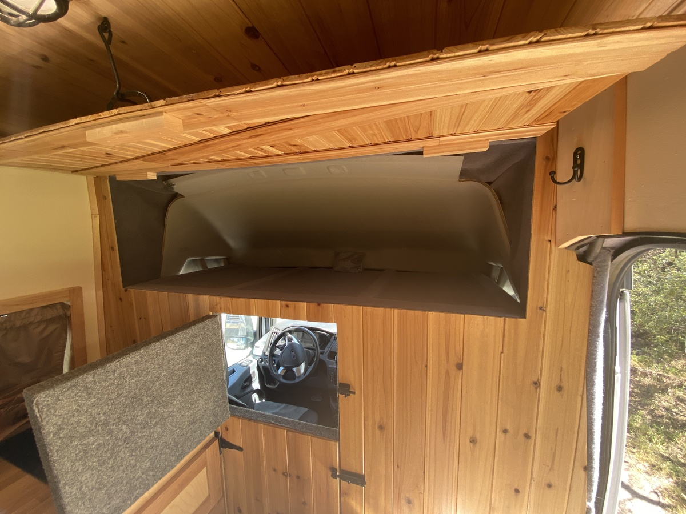
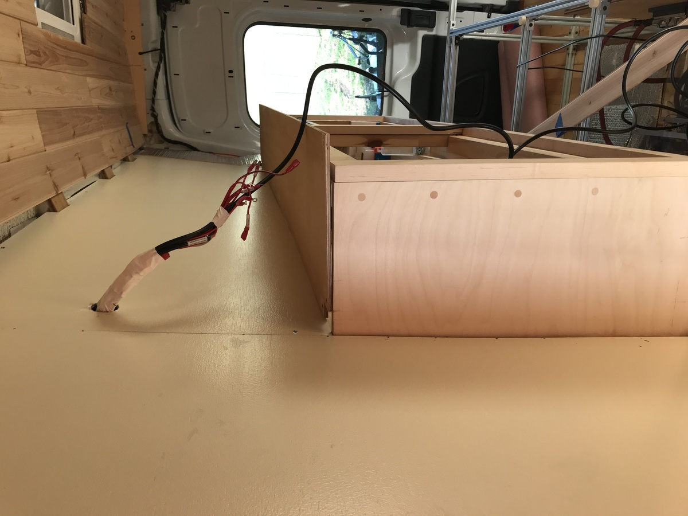

→ Walls. Partition Wall
Summary
Partition Wall
- a fixed partition wall with double dutch style doors was added for privacy and insulation with access to the cab
- the same cedar planking later used for the ceiling gives a nice continuous visual transition from the ceiling to the floor
- the cab overhead was converted to a large storage area
Other Walls
- various spacers and templates were created to fill in the van wall contours
- carpet was used on the sliding door and trim areas that had more contours than wood could fill
- 1/4” luan painted sheeting was nailed into the furring strips (note electrical had to be completed before this step)
Partition Wall
The partition wall frame is built off part of the metal framing of the van - there are pre-tapped mounting holes, I assume for after market partition wall installers. I extended off of these with 2x2s.
1/8” thick cedar planking are used for the partition wall facing, and also for the ceilings. It’s commonly sold for use in lining closets, since it is bug resistant.



Walls
The walls were a painted 1/4” luan ply mounted to the furring strips via a nail gun.
Applying a second coat


Sliding Door Area
Making the template that was needed to trim up to the edges of the door frame.
For the entry area I knew I wanted to have a clean carpeted appearance with no exposed metal, but it was difficult due to this gap:
The contour was traced out and a wood facing was screwed to the furring strip to give a solid place to adhere carpet. Later the exposed edging would be faced with vinyl U-channel going around all the way around.
Showing the walls attached
Next: 04-Ceiling-Skylight-Fan